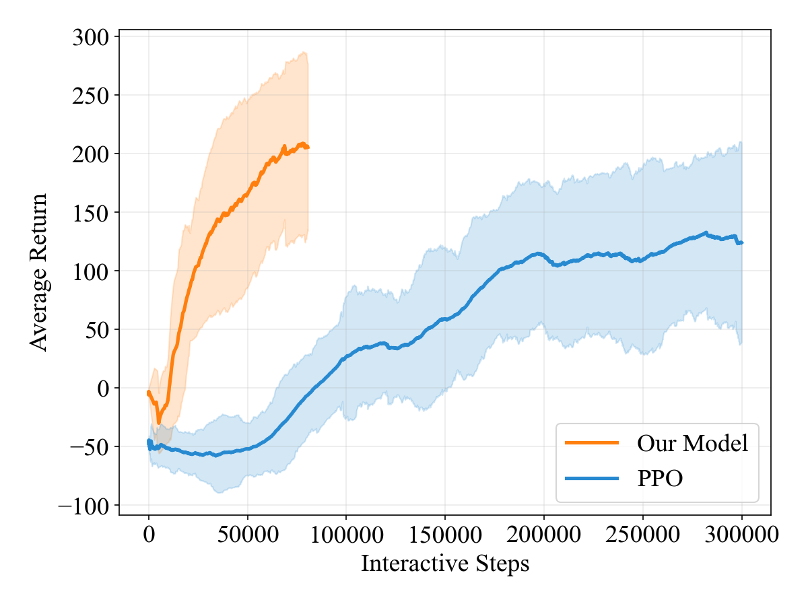

Kinematics-Aware
简单摘要
由于大规模现实世界交互的高成本和安全风险，数据高效学习仍然是自动驾驶的核心挑战。虽然基于世界模型的强化学习可以通过潜在的想象力实现策略优化，但现有的方法通常缺乏明确的机制来编码空间和运动结构，这些结构对于执行任务至关重要。

尽管自动驾驶取得了快速进展，但在长尾和安全关键场景中实现可靠决策仍然是一项根本挑战。强化学习 (RL) 为通过交互驱动的优化进行顺序决策提供了原则框架。
核心创新
第一，在这项工作中，我们以循环状态空间模型（RSSM）为基础，提出了一种用于自动驾驶的运动学感知潜在世界模型框架。
第二，消融研究进一步验证了所提出的设计增强了潜在空间内的空间表示质量。
技术细节
在现实世界的驾驶中，自我车辆无法获取完整且准确的环境状态，例如其他驾驶员的精确意图或封闭的道路区域。S × A × S →[0, 1] 定义下一个状态的条件转移概率分布。S × A →R 是平衡进度、安全性和规则遵从性的奖励函数，而 γ ∈[0, 1] 是折扣因子。

$$ \mathbf{o}_t = \{I_t, \mathbf{v}_t\}, $$
这条公式定义了论文中的一个核心计算关系。阅读时可以先确认左侧要得到的结果，再看右侧由 o、t、v、t 如何共同构成这个结果。
$$ \mathbb{E}_{\pi} \left[ \sum_{t=0}^{\infty} \gamma^t r_t \right]. $$
这条公式定义了论文中的一个核心计算关系。阅读时可以先确认左侧要得到的结果，再看右侧由 mathbb、E、pi、left 如何共同构成这个结果。
$$ e_t = \text{Concat}(f_{\text{img}}, f_{\text{phys}}) \in \mathbb{R}^{d_{\text{img}} + d_{\text{phys}}}. $$
这条公式定义了论文中的一个核心计算关系。阅读时可以先确认左侧要得到的结果，再看右侧由 Concat、img、phys、in 如何共同构成这个结果。
$$ \begin{aligned} &h_t = f_\theta(h_{t-1}, z_{t-1}, a_{t-1}), \\ &\text{Prior: } \hat{z}_t \sim p_\theta(\hat{z}_t \mid h_t), \\ &\text{Posterior: } z_t \sim q_\theta(z_t \mid h_t, e_t), \end{aligned} $$
这条公式定义了论文中的一个核心计算关系。阅读时可以先确认左侧要得到的结果，再看右侧由 aligned、f、theta、Prior 如何共同构成这个结果。
$$ \mathcal{L}_{\text{basic}} = \mathbb{E}_{q_\theta}\left[\sum_{t=1}^{T} \left(\mathcal{L}_{\text{pred},t} + \mathcal{L}_{\text{KL},t}\right)\right], $$
这条公式定义了论文中的一个核心计算关系。阅读时可以先确认左侧要得到的结果，再看右侧由 L、basic、mathbb、E 如何共同构成这个结果。
$$ \hat{l}_t = f_{\text{lane}}(h_t,z_t) = \left[\hat{d}_{\text{left}}, \hat{d}_{\text{right}}, \hat{\Delta}_{\text{heading}}\right] \in \mathbb{R}^{3}, $$
这条公式定义了论文中的一个核心计算关系。阅读时可以先确认左侧要得到的结果，再看右侧由 hat、l、t、lane 如何共同构成这个结果。
$$ \hat{n}_t = f_{\text{nbr}}(h_t,z_t) \in \mathbb{R}^{12}, $$
这条公式定义了论文中的一个核心计算关系。阅读时可以先确认左侧要得到的结果，再看右侧由 hat、n、t、nbr 如何共同构成这个结果。
$$ \mathcal{L}_{\text{total}} = \mathcal{L}_{\text{basic}} + \mathcal{L}_{\text{lane}} + \mathcal{L}_{\text{nbr}}. $$
这条公式定义了论文中的一个核心计算关系。阅读时可以先确认左侧要得到的结果，再看右侧由 L、total、L、basic 如何共同构成这个结果。
实验结论
实验主要验证：本节详细介绍了我们的实验设置、模型配置、对比实验、消融研究和相关结果分析。结果上，为了证明样本效率，我们将我们的框架与标准无模型基线进行比较。
| >@ white 2cInput | Heads | Metrics | ||||
|---|---|---|---|---|---|---|
| (lr)1-2 (lr)3-5 (lr)6-7 Image | Phys | Decoder | Rwd/Cont | Lane/Neigh | MR | SR |
| 176.5 | 0.17 | |||||
| 193.6 | 0.33 | |||||
| 172.6 | 0.18 | |||||
| gray!20 | 217.2 | 0.49 | ||||
| @ Group | Dim | Mean Return | Top Reason | Influence |
|---|---|---|---|---|
| Baseline | 31 | 208.1 (73.4) | -- | -- |
| Border | 2 | 48.6 (27.4) | Out of Road | 76.6% |
| Heading | 1 | 91.8 (81.5) | Out of Road | 55.9% |
| Phys | 5 | 149.5 (6.4) | Out of Road | 28.1% |
| Center | 1 | 147.8 (52.1) | Collision with Vehicle | 28.9% |
| Nav | 10 | 151.1 (10.1) | Out of Road | 27.4% |
| Neigh | 12 | 156.5 (35.6) | Collision with Vehicle | 24.7% |



4.1 实验装置
实验主要验证：我们的实验是在MetaDrive自动驾驶模拟环境中进行的。结果上，我们选择的地图具有多车道道路、中等交通密度以及直线和曲线路段的混合，确保任务具有足够的挑战性，同时保持易于处理。
4.2 型号配置
实验主要验证：世界模型遵循 DreamerV3 架构，并具有第 3 节中描述的增强功能。结果上，CNN 编码器和解码器采用深度 32、内核大小 4、最小分辨率 4 和 SiLU 激活。
4.3 对比实验
实验主要验证：为了证明样本效率，我们将我们的框架与标准无模型基线进行比较。结果上，PPO使用相同的观测数据、相同规模的编码器和Actor Critic架构，以及相同的Metadrive配置。
4.4 消融研究
实验部分首先关心的是：我们进行了一系列的消融实验，结果如图和表所示。
对比结果表明，我们的消融研究比较了四种模型变体。进一步结合定性现象和消融分析，可以看出：结果表明，将车道/邻居头添加到仅图像模型中可以提高平均回报 (MR) 和成功率 (SR) 个百分点。
4.5 综合场景
实验主要验证：我们比较不同模型变体的想象力质量。结果上，如图所示，仅使用图像输入 (ImgOnly) 训练的世界模型会生成物理上不一致的卷展栏。
4.6 面膜实验
实验主要验证：在设计框架之前，我们进行了掩蔽实验，使用包括车道边界距离（2D）、航向角（1D）、。结果上，影响力的计算方式为（基线回报 - 屏蔽回报）/基线回报，量化删除特定信息组时的性能下降。
理解评价
如果把这篇论文放回问题背景里看，它真正的价值在于：由于大规模现实世界交互的高成本和安全风险，数据高效学习仍然是自动驾驶的核心挑战。这说明作者不是只补一个局部模块，而是在重新组织问题该怎样被解决。
最能支撑这个判断的，还是实验给出的证据：本节详细介绍了我们的实验设置、模型配置、对比实验、消融研究和相关结果分析。换句话说，这些设计并不只是概念上更完整，而是实实在在改变了最终结果。
当然，它离真正成熟的方案还有距离：当前方案仍然受制于计算资源、输入质量或场景复杂度，距离真正稳健的大规模部署还有差距。后续更值得继续推进的方向，是 同时提升效率、泛化能力以及在更复杂场景下的稳定性。